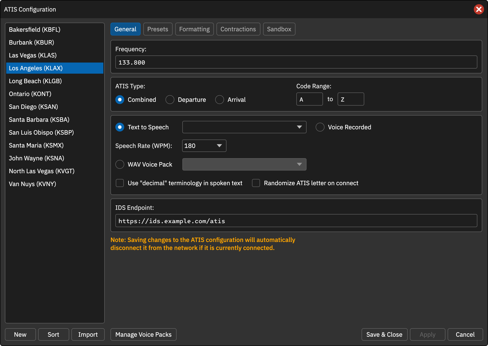

常规设置
在配置窗口选择席位后打开 General。保存常规、预设、格式修改会使在线席位断开，以便重新生成一致的情报。
基本字段
| 字段 | 说明 |
|---|---|
| Frequency | VHF 频率，以 MHz 输入，例如 127.800 |
| ATIS Type | Combined → XXXX_ATIS；Departure → XXXX_D_ATIS；Arrival → XXXX_A_ATIS |
| Code Range | 字母范围，可将离场设为 A–N、进场设为 M–Z |
| Text to Speech | 在线合成；CAN 公共 TTS 后端尚未配置，能看到音色不代表可用 |
| Voice Recorded | 人工录音 |
| Speech Rate | TTS 语速 120–240 WPM，步进 10，默认 180；不控制录音或 WAV 拼接 |
| WAV Voice Pack | 选择本地语音包拼接播报 |
| Use decimal terminology | 小数点读作 DECIMAL，而不是 POINT |
| Randomize ATIS letter on connect | 在配置范围内随机选择初始字母；同步真实字母时忽略 |
原版 Default 音色类似 FAA D-ATIS，但该模型不随 CAN 客户端分发。语音服务状态见FAQ。
IDS Endpoint
可填写兼容 IDS 的 HTTP 接口，客户端在更新时提交以下字段：
{
"facility": "ZGGG",
"preset": "NORTH",
"atisLetter": "L",
"atisType": "combined",
"airportConditions": "ILS APPROACH IN USE",
"notams": "TWY A CLSD",
"textAtis": "ZGGG ATIS INFO L ...",
"timestamp": "2026-10-22T12:00:00Z",
"version": "1.0.0"
}
textAtis 包含完整文字情报，运行情况和通告字段仅为自由文本。断开时发送空的预设、字母、运行情况、通告和正文以便清屏。
CAN 差异：原版 IDS 使用 Hub 签发令牌和 JWKS 验证。CAN 当前不提供相同签名链，不能将原版 JWKS 当作 CAN 身份凭据验证源；对接方应先确认实际请求认证行为。
自定义 METAR 来源
关闭配置后，在配置 JSON 对应 stations 项中添加：
{
"identifier": "ZGGG",
"customMetarUrl": "https://example.com/metar/{icao}"
}
{icao} 被替换为机场代码；固定地址可不带占位符。服务需返回包含该机场 METAR / SPECI 的纯文本，多行时取首个匹配报文。失败时回退 CAN 默认数据源。删除字段或设为空可取消。
按字母轮换音色
在 atisVoice 中配置至少两项，名称需匹配服务提供的音色：
{
"atisVoice": {
"useTextToSpeech": true,
"voice": "Default",
"alternatingVoices": ["US Male", "UK Female"]
}
}
从字母范围起点按顺序循环；两项以上覆盖单选音色。删除该数组可取消轮换。当前实现对未知音色报错，不能假定自动回退 Default。该功能仍需可用 TTS 后端。
未录音自动断开
{
"atisVoice": {
"useTextToSpeech": false,
"disconnectIfUnrecorded": true
}
}
人工录音席位上线后若 5 分钟内没有录音，会自动断开；只对录音模式生效，时间不可配置。删除字段或设为 false 可关闭。
操作截图参考
以下为上游原版截图，保留英文标签。用于定位操作；品牌、登录字段与网络行为以本页 CAN 说明为准。
